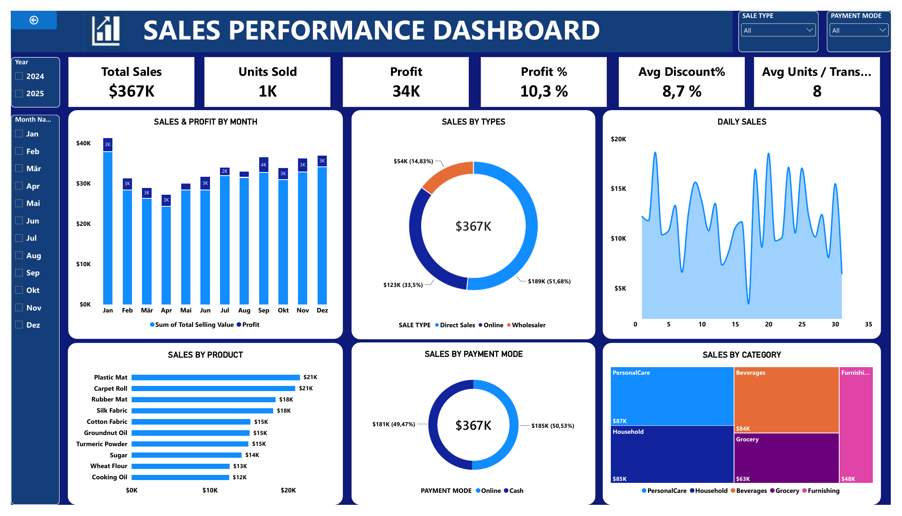

Where do our sales and profit come from?
I analysed 527 sales transactions across 2024 and 2025 in Power BI to see which sale types, products and categories drive revenue, and built an interactive dashboard from the results.
Final dashboard
Final Sales Performance Dashboard (screenshot of the interactive Power BI version). The slicers filter by year, month, sale type and payment mode.

The challenge
A business wants one clear view of its sales: how much it sells, how much profit it makes, and which channels, products and categories perform best, so managers can make faster decisions.
The data
An Excel file with two sheets. Input Data has 527 transactions (1 Jan 2024 to 31 Dec 2025) with date, product ID, quantity, sale type, payment mode and discount %. Master Data has 45 products with name, category, unit of measure, buying price and selling price. The results I measured are Total Sales and Profit.
What I did in Power BI
- Loaded and cleaned the data: Imported both Excel sheets, checked for missing values and set the correct data types.
- Built the data model: Linked Master Data to Input Data using
PRODUCT ID, so every sale gets its product name, category and prices. - Created a date table: To analyse sales by year, month and day.
- Wrote DAX measures:
- Total Selling Value and Total Cost.
- Profit and Profit % (profit divided by sales).
- Average Discount % and Average Units per Transaction.
- Designed the dashboard: With 6 KPI cards, 6 charts and 4 slicers so anyone can filter the results.
Behind the dashboard: visuals
- Sales & Profit by Month: column chart to see the trend across the year.
- Sales by Type and Payment Mode: donut charts for the channel and payment split.
- Daily Sales: area chart to spot peak days.
- Sales by Product: bar chart of the top 10 products.
- Sales by Category: treemap to compare the five categories.
Key findings
- Total sales were $367K with $34K profit, a profit margin of 10.3%.
- The average discount was 8.7%, and the average order had 8 units.
- Direct Sales lead with $189K (51.7%), followed by Online $123K (33.5%) and Wholesaler $54K (14.8%).
- Payment mode is balanced: Online $185K (50.5%) and Cash $181K (49.5%).
- Top products: Plastic Mat and Carpet Roll (about $21K each), then Rubber Mat and Silk Fabric ($18K).
- Categories are close: PersonalCare $87K, Household $85K and Beverages $84K. Furnishing is the lowest at $48K.
- January is the strongest month and April the weakest, with monthly profit between $2K and $4K.
Recommendation
Keep investing in Direct Sales, while growing Online and Wholesaler sales, which together make up less than half of revenue. Review discounts on low-margin products to lift the 10.3% profit margin, and plan stock and promotions around the peak months.
Tools used
Power BI Desktop, DAX, Data modelling, Excel, Dashboard design.